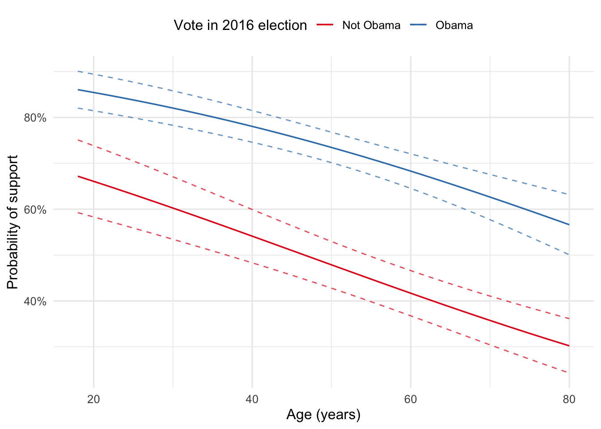

Packages used in this post
library(tidyverse)
library(socviz)
library(broom)
library(scales)
library(modelsummary)
library(kableExtra)
theme_set(theme_minimal(base_size = 12))Paw Hansen
May 17, 2023
Computer software, such as R and Python, makes it easy to build complex statistical models. And with a few lines of code, you can get all sorts of outputs summarizing the model parameters.
However, the default computer output for most statistical models is rarely the most intuitive or compelling way to present your results to stakeholders.
In this post, I introduce a basic principle for how to present statistical results in a way that is easy to interpret, compelling to readers, and requires no special knowledge to understand. Applying these guidelines will ensure that your next data analysis actually makes the impact on stakeholders you intend it to make.
Consider the following example using survey data from the General Social Survey. Using respondents’ age (in years) and vote in the 2016 election (Obama(not Obama), we want to predict support of marihuana legalization (yes/no). That is, our data looks as in Table 1.
| grass | obama | age |
|---|---|---|
| 1 | Obama | 61 |
| 0 | Not Obama | 72 |
| 1 | Obama | 55 |
| 1 | Obama | 53 |
| 0 | Not Obama | 71 |
| 1 | Obama | 32 |
Let’s fit a basic logistic regression model predicting support for legalization from age and whether respondents voted for Obama in 2016. Table 2 shows the results.
| Support for legalization | |
|---|---|
| (Intercept) | 1.17*** |
| (0.25) | |
| Age (years) | −0.03*** |
| (0.00) | |
| Voted Obama in 2016 | 1.10*** |
| (0.13) | |
| Num.Obs. | 1115 |
| AIC | 1364.0 |
| BIC | 1379.1 |
| Log.Lik. | −679.014 |
| RMSE | 0.46 |
| + p < 0.1, * p < 0.05, ** p < 0.01, *** p < 0.001 |
Table 2 contains several numbers, some of which have asterisks next to them. If this makes you happy, beware.
Before going further, quiz yourself and see if you can answer the following question without using any statistical jargon: what can we say about the relationship between age and support for legalization?
If your answer begins “There is a statistically significant relationship between…”, then you are going off track. If your answer begins “The coefficient reveals that the log(odds) of age…”, all the worse.
Being a reader of this blog post, you likely have some training in statistical modeling. But your stakeholders might not. If you have a hard time communicating the conclusions from the output in plain language, the default output will probably make little sense to your stakeholders.
The general rule of thumb I propose here is that you always try to present your results ‘on a human scale’. Thinking of someone with no formal training in statistics, what would make sense to that person? What kind of questions would someone caring about the substance (but not the methods) be interested in?
For example, log(odds) do not buy you anything down at the supermarket. They have no value or interpretation outside the realms of statistics. Neither do standard deviations, z-scores, or p-values. Without statistical training, these numbers convey no information (and even people with statistical training often get them wrong).
Instead, use your model to make predictions on a human scale. When deciding on what predictions to make, list all the different questions that someone with no statistical training would want to know the answer to. In the case of our logistic regression, such questions might be:
For our example, I use crossing() to set up a dataframe with the values we want to see predictions for. Specifically, I use a range of age going from 18 through 80 years and people who voted for/did not vote for Barack Obama.
With that in place, we can calculate our predicted probabilities using augment() from the broom package:
Now we have a large amount of predicted probabilities of substantive interest. A good idea would be to graph them. This can be done in several ways, depending on what you want to focus your analysis on. Figure 1 is my suggestion.
preds %>%
ggplot(aes(age, .fitted, color = obama)) +
geom_line(linewidth = .6) +
geom_line(aes(x = age, y = lwr, group = obama), alpha = .7, linetype = "dashed") +
geom_line(aes(x = age, y = upr, group = obama), alpha = .7, linetype = "dashed") +
scale_y_continuous(label = percent_format()) +
scale_color_brewer(type = "qual", palette = "Set1") +
labs(x = "Age (years)",
y = "Probability of support",
color = "Vote in 2016 election") +
theme(legend.position = "top")
When writing up the analysis, carefully go over the graph. What do we see?
A useful structure might be:
Concerning 2) and 3), one example, I often use as a template is the following quote from King, Tomz, and Wittenberg (2000, 347):
“Other things being equal, an additional year of education would increase your annual income by $1,500 on average, plus or minus about $500.”
As a brief example, consider the following paragraph:
Figure 1 shows the results. Solid lines illustrate the predicted probability of supporting marihuana legalization across respondents’ age for people who voted/did not for Obama in the 2016 election. Dashed lines are the 95 percent uncertainty intervals.
First, we found that political support was a strong predictor of support for legalization. For example, at the median age of 49 years, the predicted probability of support among Obama voters was 74 percent (+/- about 1.7 pct. points), whereas a Republican had only a 49 percent probability of support (+/- 2.5 pct. points).
Second, we found that support for legalization drops with age. For example, at age 74, a Republican is only about half as likely to support legalization as is an 18-year old.
Some final advice, make sure that you round your estimates instead of just throwing useless decimals at your reader. And always provide readers with a sense of the uncertainty around your estimates.
As a data analyst, you should not just “get the numbers right”, but also “get the right numbers”. To do so, you must work on a human scale; thinking about the questions that would be compelling to someone who cares about the substance but not the methods. Use your model to make predictions that address those questions. Then use those predictions to make a compelling graph and provide a few illustrative examples. Done.
King, G., Tomz, M., and Wittenberg, J. (2000). Making the most of statistical analyses: Improving interpretation and presentation. American journal of political science, 347-361.
Healy, K. (2018). Data visualization: a practical introduction. Princeton University Press.